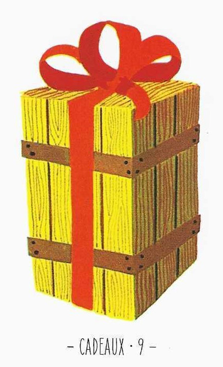

9
선물
Gifts긍정

그림 읽기
빨간 리본으로 곱게 묶인 나무 상자. 안이 보이지 않는 상자는 미지의 가능성과 비밀을 상징합니다.
선물보상재능뜻밖의 소식드러나지 않은 적성은혜순수
핵심 내용
- 선물·보상·관심의 표시, 이익·부탁·호의·친절
- 노력에 대한 인정과 보상이 돌아옴
- 연애 초기의 순수한 느낌, 설레는 감정, 선물 같은 사람
- 드러나지 않은 자질이나 재능을 가지고 있음
- 선물을 받음, 뜻밖의 소식, 생일선물, 택배
주요 메시지
미지의 가능성 — 상자를 열기 전엔 알 수 없는 새 기회
기대와 불확실성 — 기다리는 동안의 희망과 불안이 공존
실생활 적용
새로운 시작과 기회 — 새 관계·직업·프로젝트. 열린 마음으로 접근
예기치 못한 결과 — 결과가 불투명한 결정·투자에서 등장
학습 노트
선물이 아직 개봉되지 않았으므로 결과는 아직 모른다 — 모든 가능성에 대비하라는 뜻.
조합 메모

9번+10번 = 장기적 안정과 평화를 주는 기회

4번+9번 = 번영과 선물이 관계에 신선함